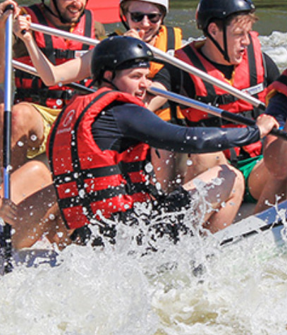

Our Mission: To offer safe, fun, and unforgettable core memories for our clients through exhilarating whitewater rafting adventures. Guided by our creed of absolute safety and relentless passion for the river, our motto remains: "Conquer the Rapids, Cherish the Memories." We are dedicated to fostering a deep connection with nature while ensuring every journey down the river inspires confidence, teamwork, and a lifelong love for adventure.